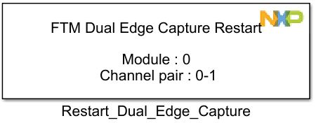
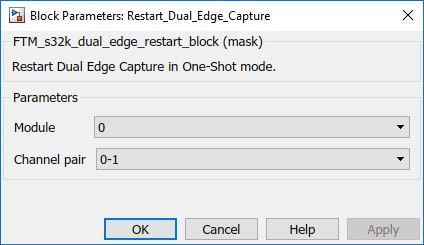

Restart Dual Edge Capture Block
The main functionality of the block is to restart the dual edge capture when operating in one-shot mode.
Block Image
Inputs:
- None
Outputs:
- None
Parameters and Dialog Box
Module
Select which FTM module to use.
- Range varies depending on the selected MCU in the main config block.
Channel Pair
PWM channel pair
- 0 – 1
- 2 – 3
- 4 – 5
- 6 – 7
Block Dependency
- Dual edge capture block must present and configured for one-shot mode.
Block Miscellaneous Details
- None